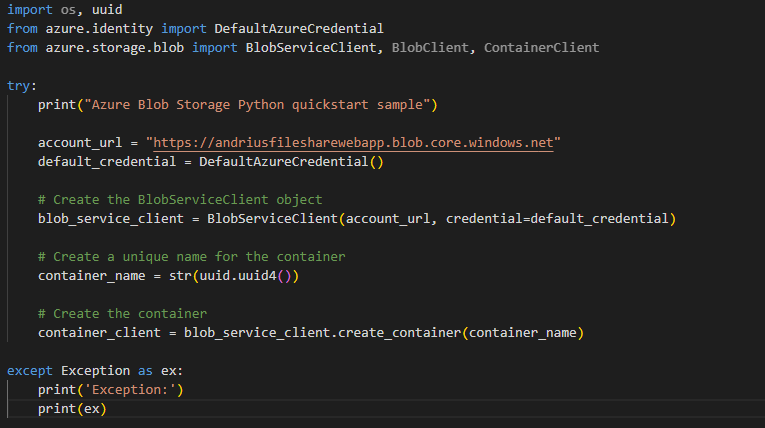
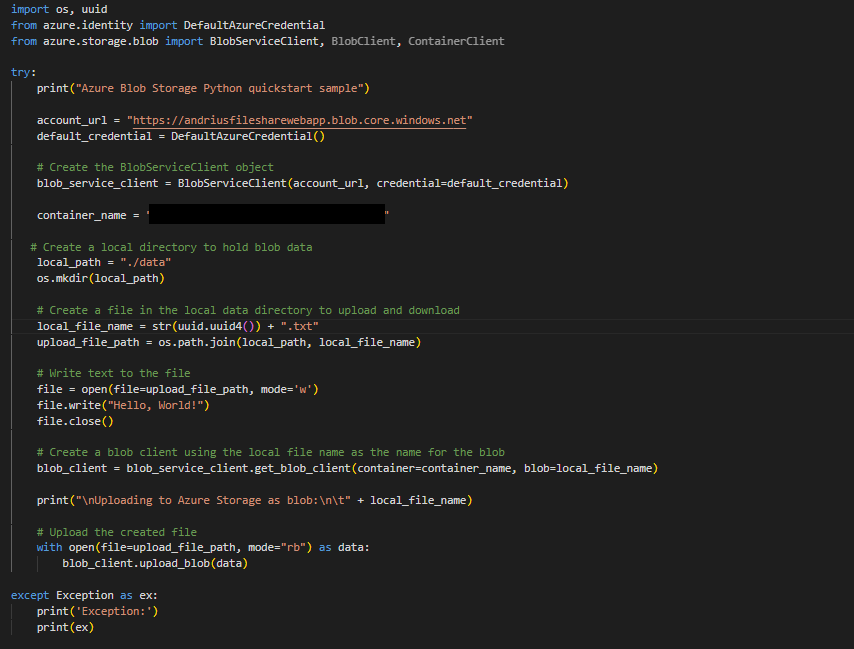
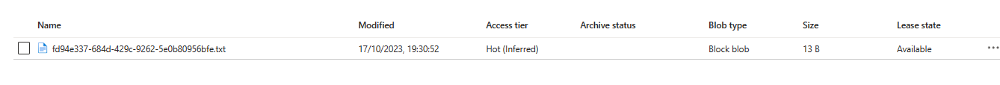
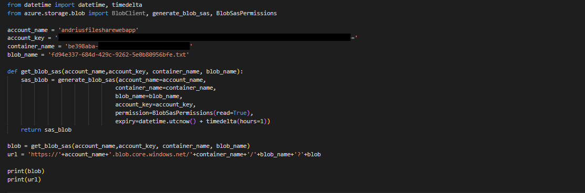
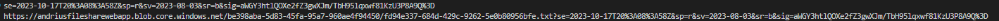
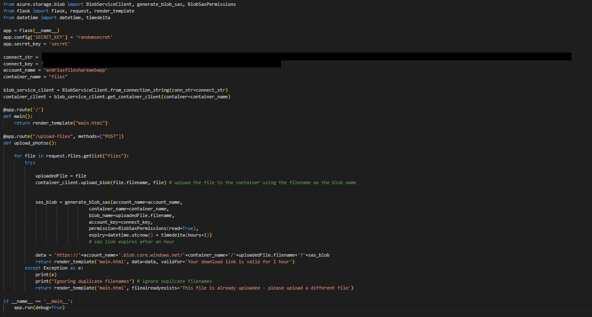
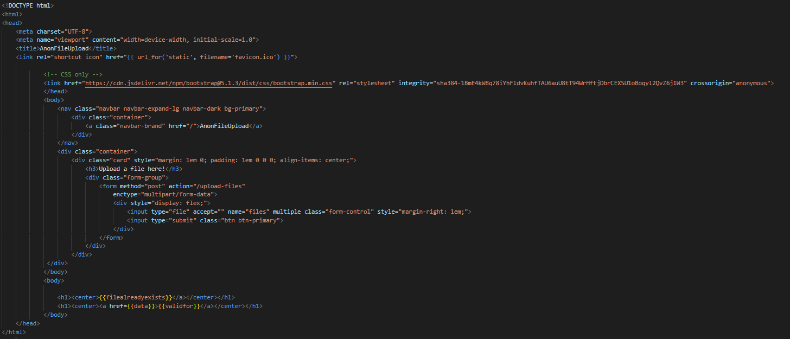

Anonymous file share using Azure blobs and a front end website
Resources used:
• Azure Storage Accounts (specifically Blob storage as lots of different files would be uploaded )
• Flask to run the web server and provide a front and back end fpr the file upload site
I started by first following the Azure Blob storage quick start guide for Python which consisted of importing the relevant packages and testing the functionality of an existing Blob
I also created a Storage Account on Azure, this is an encapsulator for individual containers which allows me to control access as well as to generate access keys
I was able to create a Blob using Phython:

Then generate and upload a .txt file to it:


And then generate a unique link for that .txt that can be used to download it for an hour:


This confirmed that the functionality I needed existed within the Python package
I also found an existing GitHub project which has some of the basic functionality I was lookinf for (namely a HTML/CSS front-end as well as the ability to upload files directly to an Azure Blob)
However this was missing other functionality such as:
• No SAS (Shared Access Signature) capability which would be necessary for me to generate a link that anyone could use to download the file for a limited time
• Limited to just uploading images which would have to be removed for it to act as a true file sharing website
I re-wrote most of the existing code, removing features such limiting uploads to images, the preview of all images in the blob
Python:

HTML:

Webpage:
 And the basic flow of the program:
And the basic flow of the program:
.png)